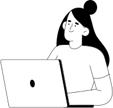

В роли наставника и ревьюера вы будете:
-
01.
Менять жизнь людей к лучшему — тысячи наших студентов нуждаются в ваших
знаниях и опыте — не бойтесь ими делиться
-
02.
Учиться новому — вы узнаете, как давать обратную связь,
выступать на публике и мотивировать людей
-
03.
Общаться с людьми из EdTech — станете частью сообщества
экспертов и посмотрите на мир онлайн-образования изнутри
-
04.
Иметь доход в среднем от 35 до 50 тысяч ₽ в месяц —
удаленно, 2–3 часа в день, график выбираете сами
-
05.
Развиваться внутри роли — вы сможете стать старшим наставником или сеньор-ревьювером
-
Задачи наставника
-
Помогать студентам ставить цели, рефликсировать и делать выводы.
-
Отвечать на их вопросы в чате.
-
Проводить вебинары и давать обратную связь 2 раза в месяц.
-
Делиться опытом и мотивировать.

-
Задачи ревьюера
-
Проверять код и проекты студентов.
-
Простыми словами объяснять им их ошибки.
-
Давать корректирующую обратную связь.
-
Оценивать работы —
зачёт / незачёт.